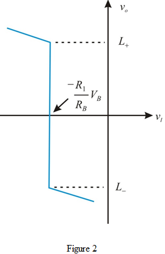
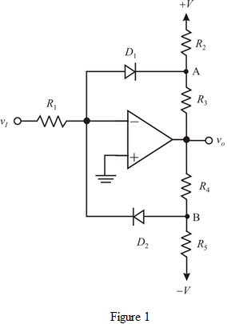
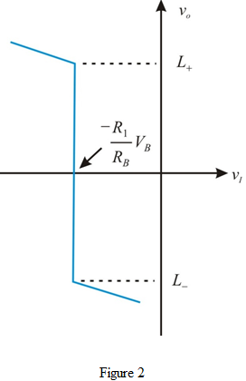

Connecting a DC source  to the virtual ground of the op amp through a resistor
to the virtual ground of the op amp through a resistor  , the transfer characteristic is shifted along the
, the transfer characteristic is shifted along the  axis to the point .
axis to the point .
Draw the transfer characteristics.

Refer to Figure 17.3 (a) in the text book.
To realize the comparator function, remove the resistor from the circuit as shown in Figure 17.3 (a) in the text book.
Draw the modified circuit.

Connecting a DC source to the virtual ground of the op amp through a resistor , the transfer characteristic is shifted along the axis to the point .
Draw the transfer characteristics.

The current passing into node B from the virtual ground of op amp is,
The voltage added to compensate the extra current is .
The current produced in the opposite direction to is,
Assume the diode is ideal.
The expression for the negative limiting levelis,
Substitute  for
for  and
and  for
for  .
.
Refer to Appendix H in the text book.
Choose the nearest 5% resistor value for  .
.
Therefore, the value of  is.
is.
Determine the value for the resistance .
Thus, the value of the resistance is .
Determine the value for the resistances  and .
and .
Choose the nearest 5% resistor value for .
Thus, the value of is and the value of  is .
is .
Determine the value for the negative limiting level.
Therefore, the offset voltage is  .
.
Use .
Determine the value for  .
.
Thus, the value of the resistance is .